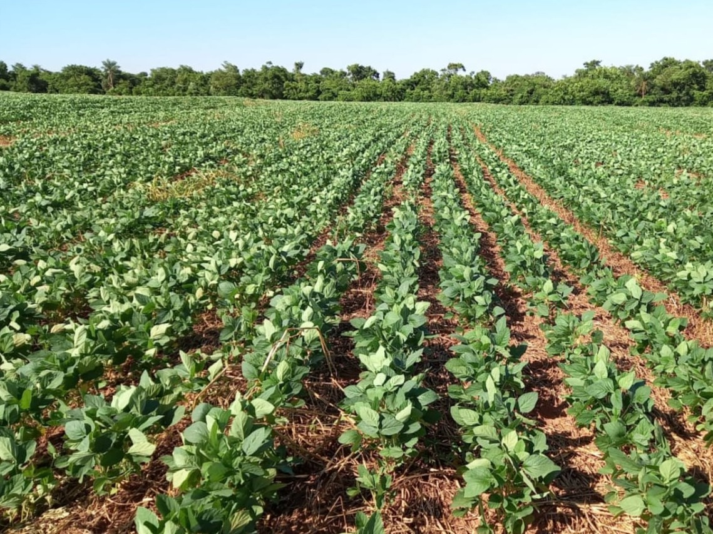
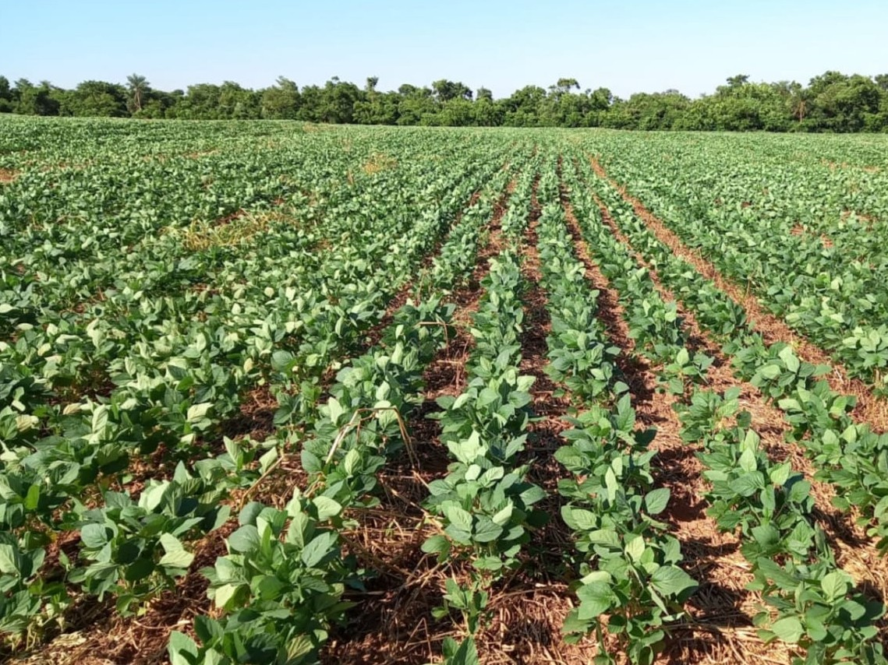
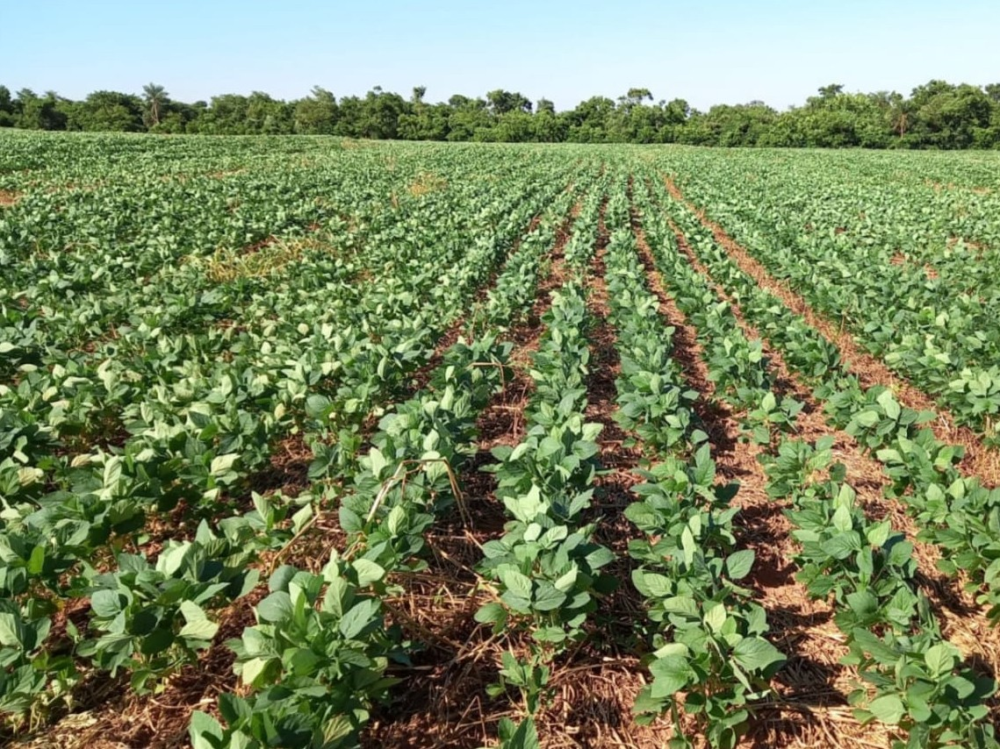

Agricultura de São José do Ivaí O Brasil é um País rico em sua cultura, temos uma agricultura de primeiro mundo, segundo o estudo da EMBRAPA temos a maior area cultivo do mundo.
E na nossa região localizada no Noroeste do Paraná,em Santa Isabel do Ivaí,mais especificamente São José do Ivaí mais conhecida popularmente como 28 esta localizada na BR PR-182, e o CEP 87913-000 e descrita por seus visitantes como um lugar calmo e acolhedor.
Nosso objetivo: Divulgar um pouco da nossa principal riqueza que é a agricultura .
Assim divulgando o trabalho de pequenos e grandes agricultores.
A agricultura de grãos é riquíssima como o arroz,cultivada pela familia Ramilde, por Jose Neide Ramilde,Anamelia Ramilde, Olivia Ramilde,localizado na fazenda Volta Grande, toda familia unida plantam 500 hectare de arroz, podemos ver um pouco desse manejo,nas fotos cedidas pelo filho do agricultor José Neide Ramilde, seu filho Otavio Ramilde e seu primo Ady Ramilde mostram a realidade e desafios do dia a dia no cultivo desse cereal no instagram, e a espera da produtividade é em média de 300 a 320 sacos por alqueire. A confiança é boa relata o filho Otávio Ramilde...'Sempre vi meu pai trabalhando e cresci no meio de tudo isso, e fui gostando, pegando amor e acho essa profissão muito gratificante por produzir alimento para muitas pessoas'. .
Tambem mostrando um pouco da produção de milho e soja, grande forte do nosso distrito, proporcionando serviços de mão de obra, e valor econômico a nosso distrito.

Outro cultivo que tem ganhado destaque em nossa terra é a plantação de Girassóis, localizado na EST SJV Barraco Zinco- Rural,Sítio Santa Isabel Ramal 18, plantados pelos agricultores Wendel Carlos Miquilin e José Nilton Miquilin, incentivados pela fiha de Wendel Ana Luiza Woehl Miquilin por gostar muito de girassóis e despertar interesse, insistiu ao pai nesse novo cultivo, causando até pequenas discórdias,relata a mãe Mariliz Woehl.E não é que a ideia de Ana Luiza foi bem sucedida, a produtividade se adaptou bem ao nosso clima e região,o plantio foi feito em uma area total de 13 alqueires, a colheita está ocorrendo com os mesmos equipamentos usados na plantação de soja, e a produção é de 3 mil kg por alqueires. Então a promessa é boa e além de tudo está trazendo belas imagens ao nosso distrito.


 
